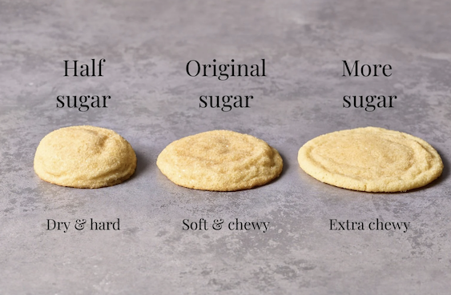
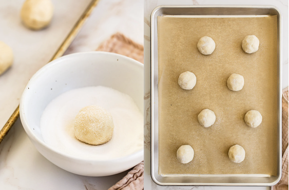
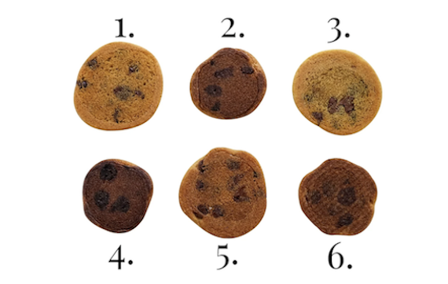
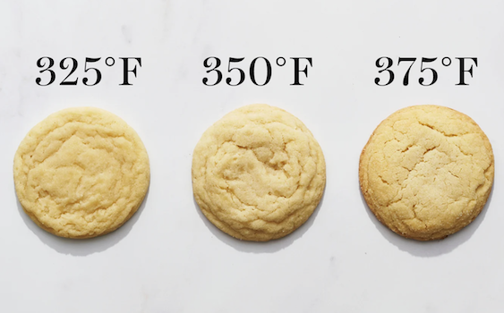

All-purpose flour – Make sure to weigh your flour accurately. If you add too much flour, your cookies won’t spread at all and won’t be soft or chewy.
Baking powder – This gives the sugar cookies lift, without adding too much spread or browning. Fine sea salt – So important to balance the sweetness!
Unsalted butter – It’s important that your butter is at a cool room temperature (around 67°F), otherwise your cookies may spread.
Granulated sugar – The star ingredient! Don’t reduce the sugar – find out why here and peek the image below.
Eggs – One whole egg with an extra egg yolk lends richness and chewiness to the texture. Make sure they’re at room temperature.
Vanilla extract – No sugar cookie recipe is complete without the flavor of vanilla extract.

To prevent flat sugar cookies that spread into little puddles, it’s important to make sure your butter is at a COOL room temperature. Your sticks of butter should give slightly when pressed with your finger but still hold their shape. To be precise, your butter should be 67°F.
Besides rolling in sugar, baking powder is one ingredient that gives these cookies their characteristic cracks, so make sure your baking powder is fresh.
TIP: When the cookies are piping hot out of the oven, use a round cookie cutter to swirl around the edges of each cookie to re-shape into a perfect circle and enhance those crinkly tops.

The below photo features cookies from the same exact batch of dough, baked for the same amount of time at the same temperature.

It’s not required, baking immediately after mixing will result in absolutely delicious cookies. However, if time permits, chilling the scooped dough in an airtight container for 24-72 hours does result in cookies that are thicker, chewier, and more flavorful. Roll in sugar after chilling otherwise the sugar will absorb into the dough.

Bake at 350°F for 10 to 12 minute, or until the sugar cookies are set and are just beginning to brown around the edges, for classic thick & chewy sugar cookies. The higher the temperature and/or the longer you bake, the crispier your cookies will be. If you like really soft, almost dough-y cookies, bake at 325°F, adding a few minutes to the bake time.
Store sugar cookies in an airtight container at room temperature for up to 3 days. Store cookies with a tortilla, apple wedge, or piece of bread to keep them soft for longer.
This sugar cookie recipe freezes beautifully. Freeze the uncoated, pre-portioned balls of cookie dough in a freezer-safe container, tightly wrapped in plastic wrap, or in a Ziploc bag. Allow them to thaw overnight in the fridge or for 30-60 minutes at room temperature, then bake.